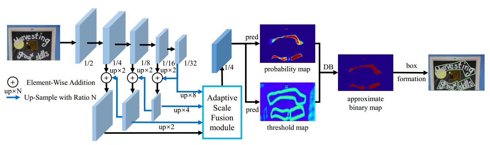
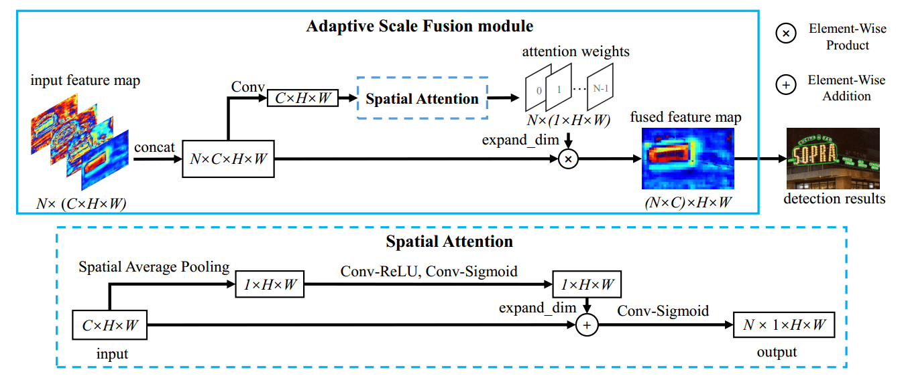
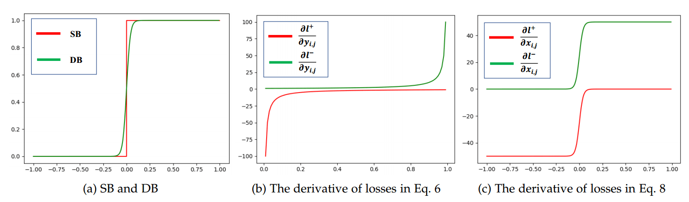
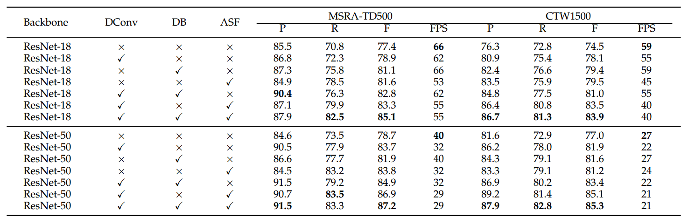
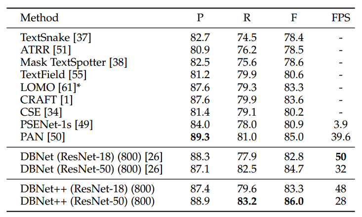
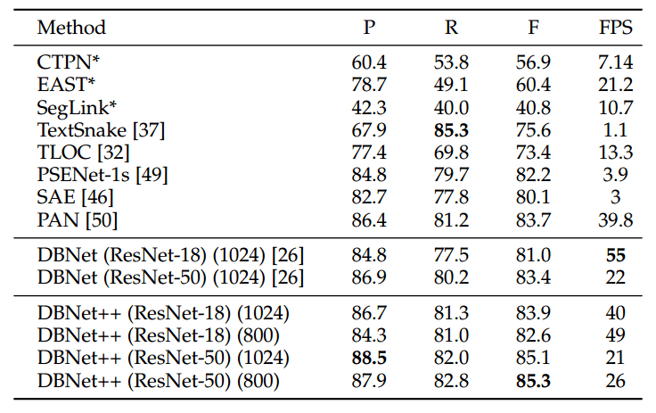

资源
-
PapersWithCode：Real-Time Scene Text Detection with Differentiable Binarization and Adaptive Scale Fusion | Papers With Code
正文
Abstract
在之前 DB 的基础上，提出了一种有效的 自适应尺度融合（ASF） 模块，通过自适应融合不同尺度的特征来提高尺度鲁棒性。
通过将所提出的 DB 和 ASF 与分割网络相结合，我们提出的场景文本检测器在五个标准基准上，在检测精度和速度方面始终取得了最先进的结果。
1 Introduction
作为场景文本检测的主流，基于分割的场景文本检测器由于其像素级表示和局部预测，通常在处理不规则形状和极端纵横比的文本实例方面具有优势。然而，它们中的大多数依赖于复杂的后处理算法将像素分组到文本区域中，导致在推理周期中花费了相当大的时间。
例如，PSENet 应用渐进尺度扩展算法来集成多尺度结果，Tian 等人通过计算像素之间的特征距离，采用像素嵌入来对像素进行分组。此外，他们主要通过应用 FPN 特征金字塔 或 U-Net 结构 来融合不同尺度的特征图来提高分割网络的尺度鲁棒性，没有明确地针对不同尺度的文本实例自适应地融合多尺度特征。
然后像之前那篇论文一样介绍了可微二值化。
本文是其会议版本 DBNet 的扩展。它从两个方面扩展了会议版本。
- 提出了一个 ASF 模块，以进一步增强分割模型的规模鲁棒性，而不会明显损失效率。所提出的 ASF 带来的改进与场景文本基准的尺度分布呈正相关。
- 对所提出的数据库模块进行了更全面的理论分析。
通过将所提出的 DB 模块和 ASF 模块集成到分割网络中，创建了一个准确、稳健、高效的场景文本检测器，称为 DBNet++：
-
与所提出的 DB 模块联合优化后，我们的分割网络可以产生高度鲁棒的分割结果，显著提高文本检测结果
-
由于可以在不牺牲准确性的情况下在推理周期中去除 DB，因此推理没有额外的内存/时间成本
-
所提出的 ASF 模块可以有效地提高分割模型的尺度鲁棒性
-
DBNet++ 在五个场景文本检测基准上实现了一贯的最先进的准确性，包括水平、多方向和弯曲文本
2 RELATED WORK
2.1 Text Detection
介绍前人工作，认为 Text Detection 分为三大类：
- Regression-based
- Part-based
- Segmentation-based
基于分割的方法通常结合像素级预测和后处理算法来获得边界框。
还有追求 FPS 的模型。
2.2 Attention Mechanisms for Image Classification
以前的一些图像分类方法使用通道注意力和空间注意力来提高图像分类的准确性。
这些方法主要通过不同类型的注意力来提炼独立特征。我们提出的自适应尺度融合侧重于融合不同尺度的特征。
2.3 用于语义分割的多尺度特征融合和上下文增强
用于语义分割的多尺度特征融合与上下文增强。
3 METHODOLOGY
{kind=link}

- 将输入图像输入到特征金字塔主干中
- 金字塔特征被上采样到相同的尺度，并被传递到自适应尺度融合（ASF）模块以产生上下文特征
- 特征 被用于预测概率图（）和阈值图（）
- 通过 和 计算近似二值映射（）。
- 在训练期间，监督应用于概率映射、阈值映射和近似二值图，其中概率映射和近似二进制映射共享相同的监督。
- 在推理期间，可以通过框形成过程从近似二值图或概率图中容易地获得边界框。
3.1 Adaptive Scale Fusion
{kind=link}

不同尺度的特征具有不同的感知和感受场，因此它们侧重于描述不同尺度的文本实例。例如，浅或大尺寸特征可以感知小文本实例的细节，但不能捕获大文本实例的全局视图，而深或小尺寸特征相反。
为了充分利用不同尺度的特征，在语义分割方法中通常采用 FPN 或 U-Net 结构。与大多数通过简单级联或相加来融合不同尺度特征的语义分割方法不同，我们提出的自适应尺度融合是为了动态融合不同尺度的特征。
3.2 Binarization
介绍了它的 DB：
{kind=link}

3.3 Analysis of Differentiable Binarization
用数学方式解释为什么 DB 好使。
3.4 Adaptive Threshold
自适应阈值。
3.5 Deformable Convolution
可变形卷积。
3.6 Label Generation
概率图的标签生成受到 PSENet 的启发。给定一个文本图像，其文本区域的每个多边形由一组线段描述：
是顶点的数量，在不同的数据集中可能不同，例如，ICDAR 2015 数据集为 4 个，CTW1500 数据集为 16 个。
然后，通过使用瓦蒂剪裁算法将多边形 缩小为 来生成正区域。收缩的偏移量 是根据原始多边形的周长 和面积 计算得出的：
其中 是收缩率，根据经验设置为 0.4。
通过类似的过程，我们可以为阈值映射生成标签。首先，以相同的偏移量 到 来展开文本多边形 。我们将 和 之间的间隙视为文本区域的边界。阈值映射可以通过计算到 中最近分段的距离来生成。
3.7 Optimization
损失函数 可以表示为概率映射 的损失、二进制映射 的损失和阈值映射 的损失的加权和：
4 EXPERIMENTS
4.1 Datasets
使用的数据集：
- SynthText
- MLT-2017
- MLT-2019
- ICDAR 2015
- MSRA-TD500
- CTW1500
- Total-Text
4.2 Implementation Details
对于所有模型：
- 首先使用 SynthText 数据集对它们进行 100k 次迭代的预训练。
- 在 1200 个 epochs 的相应真实世界数据集上微调模型。
- 训练批次大小设置为 16。我们遵循“多”学习率策略，其中当前迭代的学习率等于初始学习率乘以 ，其中初始学习率设置为 0.007， 为 0.9。我们使用 0.0001 的权重衰减和 0.9 的动量。最大 iter 意味着最大迭代次数，这取决于 max epochs
训练数据的数据扩充包括：
- 角度范围为 的随机旋转
- 随机裁剪
- 随机翻转
- 为了提高训练效率，所有处理后的图像都被重新调整为 640×640
4.3 Ablation Study
对 DConv、DB 和 ASF 分别做消融实验：
{kind=link}

4.4 Comparisons with Previous Methods
TotalText：
{kind=link}

CTW1500：
{kind=link}

4.5 Comparisons with the Conference Version
在标准场景文本基准测试中的定量结果表明，所提出的 DBNet++ 在准确性方面优于会议版本，速度下降很小。具体而言，在
-
Total Text 数据集
-
CTW1500 数据集
-
ICDAR 2015 数据集
-
MSRA-TD500 数据集
-
MLT-2019 数据集
的 F-measure 方面，分别提高了
-
0.5%（1.3%）
-
2.9%（1.9%）
-
0.8%（0.0%）
-
3.6%（2.3%）
-
1.3%（1.0%）
backbone 是 ResNet-18（ResNet-50）。
4.6 Limitation
文字中的文字？直接寄。
5 CONCLUSION
好使。